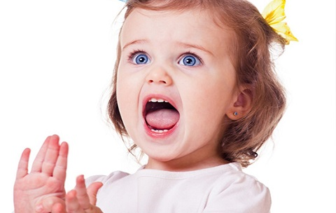
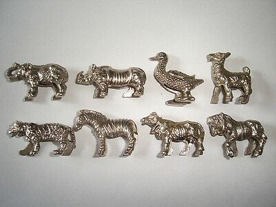
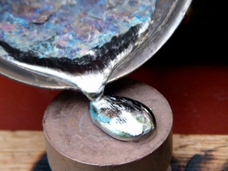

Отравление свинцом, как правило, развивается медленно, в течение длительного периода времени, когда ребенок проглатывает или вдыхает небольшие количества продуктов, содержащих свинец. Это обычно происходит, когда ребенок жует продукты, содержащие свинец, такие как предметы или игрушки, покрытые свинцовой краской. Дети чаще страдают от отравления свинцом, чем взрослые, поскольку они склонны совать в рот разные предметы. Свинец намного опаснее для детей, потому что он может вызывать нарушения развития мозга и нервной системы ребенка. Чем младше ребенок, тем серьезней будут последствия отправления свинцом.
СИМПТОМЫ
Симптомы отравления свинцом развиваются медленно в течение долгого времени. Самые распространенные симптомы отравления свинцом — это:
• пониженные аппетит и активность ребенка;
• нарушения сна;
• агрессивное поведение;
• раздражительность;
• головные боли;
• анемия;
• боли в животе;
• запоры;
• задержка развития.

ПОВСЕДНЕВНЫЕ ПРЕДМЕТЫ, КОТОРЫЕ МОГУТ СОДЕРЖАТЬ СВИНЕЦ
• Краска на свинцовой основе на старом доме. Стены любого дома, построенного до 1978 года, могут быть покрашены краской на свинцовой основе.
Признаки воздействия очень высокой токсической дозы свинца включают: • сильные боли в животе; • рвота; • затрудненная ходьба; • судорожные приступы или кома, которые могут привести к смерти. |
• Рыболовные снасти.
• Свинцовые пули.
• Игрушки и мебель, покрытые краской до 1976 года.
• Домовые водопровод, трубы и смесители, соединенные свинцовой пайкой.
• Почва, особенно если в ней многие годы накапливаются автомобильные выхлопы или соскобленная с домов старая краска.
• Наборы краски и другие принадлежности для рисования.
• Оловянная кухонная посуда.
• Сварочные материалы, некоторые виды керамической глазури.
• Свинцовые статуэтки.
• Раскрашенные игрушки.
• Выхлопы от расположенных поблизости электростанций, особенно работающих на угле.
• Выхлопы от расположенной поблизости скоростной автострады, особенно если там ездят большегрузные машины.

ОТДАЛЕННЫЕ ПОСЛЕДСТВИЯ
Воздействие небольших количеств свинца в течение долгого времени могут привести к следующим осложнениям:
• снижение темпов роста;
• нарушения слуха;
• снижение уровня интеллекта;
• нарушения внимания или поведения;
• нарушения работы почек.
ЛЕЧЕНИЕ
Лечение длительного отравления небольшими количествами свинца начинается с анализа крови для выявления свинца. Во многих штатах существует программа проверки на свинец для детей дошкольного возраста. Лечение зависит от уровня свинца в крови. При низком уровне для лечения вполне достаточно просто изолировать ребенка от источника свинца. Затем позже врач повторно измерит уровень свинца в крови, чтобы убедиться, что он нормализовался. Если повышенный уровень свинца не уменьшается, врач может назначить хелатирование (метод лечения отравлений тяжелыми металлами). Это означает использование веществ, которые прикрепляются к свинцу, содержащемуся в крови, и помогают организму быстрее вывести его.
Если обнаружен повышенный уровень свинца, ваш врач может принять решение о необходимости проведения других анализов: анализы крови для диагностирования анемии, биопсию костного мозга для оценки уровня свинца в костях или рентгеновские снимки некоторых костей.

ПРОФИЛАКТИКА
Здоровье ребенка от докторов Сирс / Сирс У. и др.